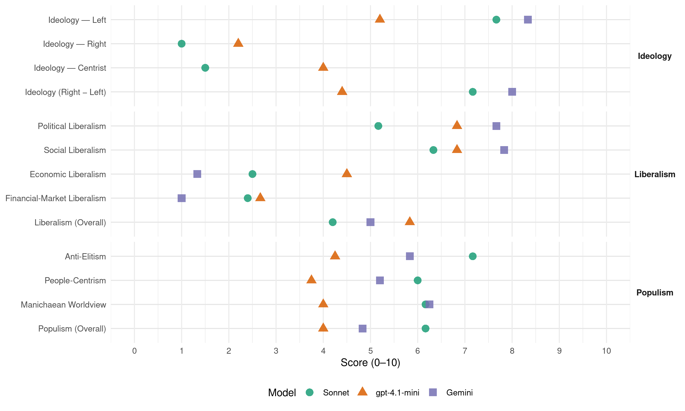

PCP (Portugal, 1995)
manifesto_id 35220_199510
Get full text: This site shows derived annotations and short verbatim quotes only. The full manifesto text is © Manifesto Project / WZB — obtain it via manifesto-project.wzb.eu using the manifesto_id above.
Headline scores
| Dimension | Sonnet | gpt-4.1-mini | Gemini |
|---|---|---|---|
| Populism (Overall) | 6.2 | 4.0 | 4.8 |
| Anti-Elitism | 7.2 | 4.2 | 5.8 |
| People-Centrism | 6.0 | 3.8 | 5.2 |
| Manichaean Worldview | 6.2 | 4.0 | 6.2 |
| Ideology (Right − Left) | 7.2 | 4.4 | 8.0 |
| Liberalism (Overall) | 4.2 | 5.8 | 5.0 |
| Political Liberalism | 5.2 | 6.8 | 7.7 |
| Social Liberalism | 6.3 | 6.8 | 7.8 |
| Economic Liberalism | 2.5 | 4.5 | 1.3 |
| Financial-Market Liberalism | 2.4 | 2.7 | 1.0 |
Evidence per dimension
Economic Liberalism
Gemini · score 1.0 · verified · chunk 1
“porá fim imediato ao processo de privatizações”
atractivos e combata eficazmente os escandalosos níveis de evasão fiscal actualmente existentes. Ao mesmo tempo porá fim imediato ao processo de privatizações, que se tem apresentado como um saque do património
Gemini · score 1.0 · verified · chunk 2
“fim imediato das privatizações”
assente nas seguintes orientações e medidas: - fim imediato das privatizações; - reforço do sector público
Gemini · score 1.0 · verified · chunk 3
“Cessar de vez as medidas de destruição, desmembramento e privatização”
NO QUADRO DESTAS ORIENTAÇÕES, O PCP PROPÕE AS SEGUINTES MEDIDAS PRINCIPAIS: Cessar de vez as medidas de destruição, desmembramento e privatização das empresas, em especial na APL, Socarmar, CP, CARRIS, STCP, TAP e ANA-EP;
Gemini · score 1.0 · verified · chunk 4
“impedindo a especulação em segundas transmissões”
HABITAÇÃO SOCIAL A CUSTOS CONTROLADOS PARA ARRENDAMENTO OU AQUISIÇÃO por jovens, impedindo a especulação em segundas transmissões; Remodelação das
Gemini · score 2.0 · verified · chunk 5
“submeter a lógica relativamente autónoma da cultura à lógica do mercado”
obrigações culturais e sociais exprime-se em particular na tentativa de submeter a lógica relativamente autónoma da cultura à lógica do mercado, à lei do lucro e da selectividade
Gemini · score 2.0 · verified · chunk 6
“publicar-se a legislação anti-monopolista prevista na Constituição”
especialmente incentivada pelo actual Governo. Nesse sentido, deverá publicar-se a legislação anti-monopolista prevista na Constituição e reforçarem-se as
gpt-4.1-mini · score 3.0 · verified · chunk 1
“fim imediato ao processo de privatizações, que se tem apresentado como um saque do património público”
Ao mesmo tempo porá fim imediato ao processo de privatizações, que se tem apresentado como um saque do património público, uma fonte de desemprego, e um factor de transferência da decisão económica nacional para o estrangeiro e de desvio de recursos fabulosos necessários ao investimento produtivo.
gpt-4.1-mini · score 2.0 · verified · chunk 2
“FIM IMEDIATO DAS PRIVATIZAÇÕES; - REFORÇO DO SECTOR PÚBLICO BANCÁRIO”
…PCP ENTENDE NECESSÁRIA UMA NOVA POLÍTICA, QUE ROMPA COM O PASSADO RECENTE DE SUBMISSÃO E ENTREGA AO GRANDE CAPITAL E ASSENTE NAS SEGUINTES ORIENTAÇÕES E MEDIDAS: - FIM IMEDIATO DAS PRIVATIZAÇÕES; - REFORÇO DO SECTOR PÚBLICO BANCÁRIO, tomando-o mais dinâmico, mais competitivo e mais capaz de exercer um papel de liderança e de equilíbrio do sistema; - RECOMPOSIÇÃO DA PRESENÇA DO ESTADO NO SECTOR segurador, criando-se condições para a implementação de uma política de seguros voltados para as necessidades da agricultura e das pequenas e médias empresas, bem como para a criação de esquemas de complemento à protecção social do Estado; impedimento da formação de grupos monopolistas privados, fixando máximos às quotas de mercado detidas por um só grupo; PROMOÇÃO DE UMA POLÍTICA DE CRÉDITO EM FAVOR DOS INVESTIMENTOS PRODUTIVOS E DE APOIO ÀS PEQUENAS E MÉDIAS EMPRESAS E AO SECTOR COOPERATIVO; LIMITAÇÃO DOS INVESTIMENTOS DE CARÁCTER ESPECULATIVO, designadamente através da penalização fiscal; regulamentação clara e rígida dos investimentos em produtos derivados; REFORÇO DA INTERVENÇÃO DAS ENTIDADES DE SUPERVISÃO BANCÁRIA E SEGURADORA, garantindo uma efectiva fiscalização de todas as empresas do sector financeiro, incluindo as sociedades auxiliares e instrumentais, de forma a garantir a segurança das poupanças e o respeito efectivo pelas leis e pêlos interesses nacionais;
gpt-4.1-mini · score 4.0 · verified · chunk 3
“a privatização da PT, à qual o PCP se opõe representa um duplo esbulho ao Estado”
A privatização da PT, à qual o PCP se opõe representa um duplo esbulho ao Estado e à comunidade, pela escandalosa subavaliação de que foi alvo e pela retirada ao património público de muitos milhões de contos de lucros anuais.
gpt-4.1-mini · score 6.0 · verified · chunk 4
“política de emprego e formação profissional que garanta a ESTABILIDADE DE EMPREGO”
…Combater o desemprego e promover uma política de emprego e formação profissional que garanta a ESTABILIDADE DE EMPREGO E A IGUALDADE NA PROGRESSÃO DE CARREIRAS profissionais…
gpt-4.1-mini · score 7.0 · verified · chunk 5
“valorização do ensino público, sublinhando em particular o desenvolvimento de relações entre as escolas e o mundo do trabalho”
O PCP assume a imperativa necessidade de uma política sólida e integrada de educação/formação que aprofunde a relação escola/sociedade. Uma política que prepare os cidadãos para o trabalho, apoiada na formação de base, na promoção e facilitação da inserção na vida activa e no desenvolvimento da formação contínua, em articulação sistemática com o processo de desenvolvimento do país. COMO ORIENTAÇÕES FUNDAMENTAIS no domínio do ensino/formação o PCP aponta: — O urgente debate e definição de linhas estratégicas claras, valorização do ensino público, sublinhando em particular o desenvolvimento de relações entre as escolas e o mundo do trabalho e a necessidade de uma maior autonomia das escolas secundárias na concepção e elaboração curricular da oferta de formação qualíficante e na construção da sua própria territorialização e identidade local e regional;
gpt-4.1-mini · score 5.0 · verified · chunk 6
“política económica e social do Governo PSD, de destruição do aparelho produtivo”
Como consequência da política económica e social do Governo PSD, de destruição do aparelho produtivo e degradação do tecido social, a sociedade portuguesa está confrontada hoje com o crescimento alarmante de fenómenos como a marginalidade, a delinquência e a criminalidade,
Sonnet · score 2.0 · verified · chunk 1
“FIM IMEDIATO DAS PRIVATIZAÇÕES”
Ao mesmo tempo porá fim imediato ao processo de privatizações, que se tem apresentado como um saque do património público… E garantirá a defesa de um sector empresarial público modernizado e eficiente
Sonnet · score 2.0 · verified · chunk 2
“FIM IMEDIATO DAS PRIVATIZAÇÕES”
O PCP ENTENDE NECESSÁRIA UMA NOVA POLÍTICA… - FIM IMEDIATO DAS PRIVATIZAÇÕES; - REFORÇO DO SECTOR PÚBLICO BANCÁRIO
Sonnet · score 2.0 · verified · chunk 3
“Cessar de vez as medidas de destruição, desmembramento e privatização”
Cessar de vez as medidas de destruição, desmembramento e privatização das empresas, em especial na APL, Socarmar, CP, CARRIS, STCP, TAP e ANA-EP
Sonnet · score 3.0 · verified · chunk 4
“ensino privado, degradou e estrangulou financeiramente o ensino público”
Estimulou o ensino privado, degradou e estrangulou financeiramente o ensino público, particularmente o ensino superior, aumentou de forma brutal as propinas
Sonnet · score 3.0 · verified · chunk 5
“submeter a lógica relativamente autónoma da cultura à lógica do mercado”
a tentativa de submeter a lógica relativamente autónoma da cultura à lógica do mercado, à lei do lucro e da selectividade ideológica
Sonnet · score 3.0 · verified · chunk 6
“orientações monetaristas e neoliberais”
ruptura com as orientações monetaristas e neoliberais, com o consequente abandono das actuais metas e prazos da convergência nominal
Financial-Market Liberalism
Gemini · score 1.0 · verified · chunk 1
“FIM IMEDIATO DAS PRIVATIZAÇÕES; - REFORÇO”
ENTENDE NECESSÁRIA UMA NOVA POLÍTICA, QUE ROMPA COM O PASSADO RECENTE DE SUBMISSÃO E ENTREGA AO GRANDE CAPITAL E ASSENTE NAS SEGUINTES ORIENTAÇÕES E MEDIDAS: - FIM IMEDIATO DAS PRIVATIZAÇÕES; - REFORÇO DO SECTOR PÚBLICO BANCÁRIO, tomando-o mais
Gemini · score 1.0 · verified · chunk 2
“reforço do sector público bancário”
fim imediato das privatizações; - reforço do sector público bancário, tomando-o mais dinâmico
Gemini · score 1.0 · verified · chunk 4
“baixando os juros e definindo condições de pagamento”
HABITAÇÃO PARA JOVENS, aumentando o volume de crédito, baixando os juros e definindo condições de pagamento de acordo com as
Gemini · score 1.0 · verified · chunk 6
“ruptua com as orientações monetaristas e neoliberais”
associadas e a ruptua com as orientações monetaristas e neoliberais, com o consequente abandono das actuais metas
gpt-4.1-mini · score 3.0 · verified · chunk 1
“privatizações no sector financeiro conduziu já ao desmantelamento do sector segurador público”
O processo de privatizações no sector financeiro conduziu já ao desmantelamento do sector segurador público e a uma forte redução no sector bancário público.
gpt-4.1-mini · score 3.0 · verified · chunk 2
“REFORÇO DA INTERVENÇÃO DAS ENTIDADES DE SUPERVISÃO BANCÁRIA E SEGURADORA, garantindo uma efectiva fiscalização”
…LIMITAÇÃO DOS INVESTIMENTOS DE CARÁCTER ESPECULATIVO, designadamente através da penalização fiscal; regulamentação clara e rígida dos investimentos em produtos derivados; REFORÇO DA INTERVENÇÃO DAS ENTIDADES DE SUPERVISÃO BANCÁRIA E SEGURADORA, garantindo uma efectiva fiscalização de todas as empresas do sector financeiro, incluindo as sociedades auxiliares e instrumentais, de forma a garantir a segurança das poupanças e o respeito efectivo pelas leis e pêlos interesses nacionais; CAPITALIZAÇÃO IMEDIATA DO FUNDO DE GARANTIA DE Depósitos; criação de uma PROVEDORIA PARA O SECTOR financeiro, como forma de defesa dos direitos dos clientes;
gpt-4.1-mini · score 2.0 · verified · chunk 3
“a privatização da PT, à qual o PCP se opõe representa um duplo esbulho ao Estado”
A privatização da PT, à qual o PCP se opõe representa um duplo esbulho ao Estado e à comunidade, pela escandalosa subavaliação de que foi alvo e pela retirada ao património público de muitos milhões de contos de lucros anuais.
Sonnet · score 2.0 · verified · chunk 1
“REFORÇO DO SECTOR PÚBLICO BANCÁRIO”
TAMBÉM PARA O SECTOR FINANCEIRO PORTUGUÊS, O PCP ENTENDE NECESSÁRIA UMA NOVA POLÍTICA… REFORÇO DO SECTOR PÚBLICO BANCÁRIO, tomando-o mais dinâmico, mais competitivo e mais capaz de exercer um papel de liderança e de equilíbrio do sistema
Sonnet · score 2.0 · verified · chunk 2
“LIMITAÇÃO DOS INVESTIMENTOS DE CARÁCTER ESPECULATIVO”
PROMOÇÃO DE UMA POLÍTICA DE CRÉDITO EM FAVOR DOS INVESTIMENTOS PRODUTIVOS… LIMITAÇÃO DOS INVESTIMENTOS DE CARÁCTER ESPECULATIVO, designadamente através da penalização fiscal
Sonnet · score 2.0 · verified · chunk 3
“crédito bonificado para a aquisição de habitação”
Reformular o crédito bonificado para a aquisição de habitação, com aumento significativo do volume de crédito a juros mais baixos de modo a alargar a concessão de crédito a mais famílias
Sonnet · score 3.0 · verified · chunk 4
“publicidade bancária”
Ninguém defende os consumidores da publicidade enganosa a que todos os dias são submetidos, nomeadamente através da publicidade bancária. Nesta área é quase certa a falsidade dos índices de remunerações dos depósitos ou dos juros aos empréstimos
Sonnet · score 3.0 · verified · chunk 6
“custo de crédito”
QUADRO ADEQUADO À REALIZAÇÃO DE POLÍTICAS FISCAIS, DE CUSTO DE CRÉDITO E DE INCENTIVO À ECONOMIA APROPRIADAS À SITUAÇÃO DE INSULARIDADE
Political Liberalism
Gemini · score 8.0 · verified · chunk 1
“reforçar a separação e interdependência dos”
direitos económicos, sociais e culturais; deve servir para reforçar a separação e interdependência dos órgãos de soberania; e para reforçar a democraticidade
Gemini · score 7.0 · verified · chunk 2
“cumprimento da Constituição da República”
uma nova, moderna e diversificada agricultura nos campos do sul exige: - o cumprimento da Constituição da República, com a
Gemini · score 8.0 · verified · chunk 3
“defesa das liberdades e à defesa da soberania”
a intervenção das empresas de comunicações, e sobretudo os operadores de serviço público, na construção de referências no que respeita a importantes direitos dos cidadãos, DE defesa das liberdades e à defesa da soberania do pais;
Gemini · score 7.0 · verified · chunk 4
“gestão democrática e a participação juvenil”
degradação e a carência das escolas, atentou contra a gestão democrática e a participação juvenil na gestão, manteve o elevado
Gemini · score 8.0 · verified · chunk 5
“garantir a sua efectiva independência”
acesso ao direito e democratização da justiça, que continua cara e lenta, e garantir a sua efectiva independência. «Em matéria de direitos
Gemini · score 8.0 · verified · chunk 6
“reforço dos mecanismos da democracia participativa”
princípio de representação proporcional; O REFORÇO SISTEMÁTICO DOS MECANISMOS DA DEMOCRACIA PARTICIPATIVA E DA DEMOCRACIA DIRECTA
gpt-4.1-mini · score 8.0 · verified · chunk 1
“ampla consagração constitucional dos direitos, liberdades e garantias”
A ampla consagração constitucional dos direitos, liberdades e garantias foi contrariada por uma prática de discriminações e de repressão nas empresas e na sociedade, de favoritismo e de fomento de clientelas do PSD, de alastramento de fenómenos de corrupção.
gpt-4.1-mini · score 3.0 · verified · chunk 2
“respeito PÊLOS DIREITOS COLECTIVOS E INDIVIDUAIS DOS TRABALHADORES DO SECTOR”
…criação de uma PROVEDORIA PARA O SECTOR financeiro, como forma de defesa dos direitos dos clientes; respeito PÊLOS DIREITOS COLECTIVOS E INDIVIDUAIS DOS TRABALHADORES DO SECTOR e garantia do exercício efectivo do controlo de gestão pelas Comissões de Trabalhadores. Fiscalidade Com as distorções anualmente introduzidas pelo Governo e pelo PSD, o sistema fiscal tem vindo a tomar-se cada vez mais injusto e iníquo.
gpt-4.1-mini · score 8.0 · verified · chunk 3
“defesa da soberania nacional”
O PCP considera necessário promover uma nova política para as comunicações e telecomunicações nacionais. Uma política que contribua para o desenvolvimento social, cultural e económico da sociedade portuguesa, para o desenvolvimento integral do país no respeito pêlos direitos dos cidadãos, dos interesses do povo português e da soberania nacional;
gpt-4.1-mini · score 7.0 · verified · chunk 4
“garantia da PARTICIPAÇÃO DOS ESTUDANTES na definição da política educativa”
…2° PARA A CONCRETIZAÇÃO DO DIREITO À EDUCAÇÃO DA JUVENTUDE: A garantia da PARTICIPAÇÃO DOS ESTUDANTES na definição da política educativa; A implementação de uma verdadeira reforma do sistema educativo…
gpt-4.1-mini · score 8.0 · verified · chunk 5
“defender os direitos, liberdades e garantias, assegurando o seu exercício efectivo”
Defender os direitos, liberdades e garantias, assegurando o seu exercício efectivo, garantir a segurança, tornar a democracia representativa mais genuína, defendendo a representação proporcional na conversão de votos em mandatos, assegurar a democracia participativa, tomando-a numa prática quotidiana aos mais diferentes níveis e democratizar a Administração Pública, descentralizando-a e desburocratizando-a, são alguns dos objectivos essenciais que o PCP defende.
gpt-4.1-mini · score 7.0 · verified · chunk 6
“valores do Estado democrático, tal como se encontra caracterizado na Constituição”
A recente evolução da comunicação social em Portugal, pese embora estar a ser servida por profissionais mais qualificados e crescentemente preocupados com o exercício dos seus direitos e deveres, não tem favorecido o reforço dos valores do Estado democrático, tal como se encontra caracterizado na Constituição, e justifica que seja considerada uma área de intervenção prioritária de qualquer governo que pretenda romper com os erros do passado.
Sonnet · score 4.0 · verified · chunk 1
“reforçar a separação e interdependência dos órgãos de soberania”
caso na próxima legislatura seja aberto um processo de revisão constitucional, ele deve servir para fortalecer… deve servir para reforçar a separação e interdependência dos órgãos de soberania
Sonnet · score 4.0 · verified · chunk 2
“funcionamento democrático”
defendendo-se a manutenção dos princípios um homem um voto, da propriedade do capital social pêlos associados, e o seu funcionamento democrático
Sonnet · score 5.0 · verified · chunk 3
“gestão democrática e a participação juvenil”
atentou contra a gestão democrática e a participação juvenil na gestão, manteve o elevado nível de insucesso e abandono escolar
Sonnet · score 5.0 · verified · chunk 4
“gestão democrática e a participação juvenil”
atentou contra a gestão democrática e a participação juvenil na gestão, manteve o elevado nível de insucesso e abandono escolar
Sonnet · score 7.0 · verified · chunk 5
“pluralismo e igualdade de oportunidades na comunicação social”
garantia do pluralismo e igualdade de oportunidades na comunicação social. Impõe-se ainda, neste quadro, rever as normas que, a pretexto da protecção da honra
Sonnet · score 6.0 · verified · chunk 6
“reforço do regime democrático”
inversão da actual situação no sector se toma necessária à estabilidade e reforço do regime democrático
Liberalism (Overall)
Gemini · score 5.0 · verified · chunk 1
“reforçar a separação e interdependência dos”
direitos económicos, sociais e culturais; deve servir para reforçar a separação e interdependência dos órgãos de soberania; e para reforçar a democraticidade
Gemini · score 4.0 · verified · chunk 2
“fim imediato das privatizações”
assente nas seguintes orientações e medidas: - fim imediato das privatizações; - reforço do sector público
Gemini · score 6.0 · verified · chunk 3
“direitos dos cidadãos e dos consumidores”
salvaguardando os direitos dos cidadãos e dos consumidores, designadamente com o estabelecimento de formas institucionais adequadas para o controle dos serviços prestados por parte dos cidadãos e das instituições;
Gemini · score 4.0 · verified · chunk 4
“combate às discriminações no acesso ao emprego”
específicos no acesso à habitação; O COMBATE ÀS DISCRIMINAÇÕES no acesso ao emprego e nas condições de trabalho; A extensão
Gemini · score 6.0 · verified · chunk 5
“garantir a sua efectiva independência”
acesso ao direito e democratização da justiça, que continua cara e lenta, e garantir a sua efectiva independência. «Em matéria de direitos
Gemini · score 5.0 · verified · chunk 6
“respeito integral pêlos direitos, liberdades e garantias”
iniciativa legislativa popular e do referendo; O RESPEITO INTEGRAL PÊLOS DIREITOS, LIBERDADES E GARANTIAS E A CONCRETIZAÇÃO
gpt-4.1-mini · score 6.0 · verified · chunk 1
“ampla consagração constitucional dos direitos, liberdades e garantias”
A ampla consagração constitucional dos direitos, liberdades e garantias foi contrariada por uma prática de discriminações e de repressão nas empresas e na sociedade, de favoritismo e de fomento de clientelas do PSD, de alastramento de fenómenos de corrupção.
gpt-4.1-mini · score 2.0 · verified · chunk 2
“FIM IMEDIATO DAS PRIVATIZAÇÕES; - REFORÇO DO SECTOR PÚBLICO BANCÁRIO”
…PCP ENTENDE NECESSÁRIA UMA NOVA POLÍTICA, QUE ROMPA COM O PASSADO RECENTE DE SUBMISSÃO E ENTREGA AO GRANDE CAPITAL E ASSENTE NAS SEGUINTES ORIENTAÇÕES E MEDIDAS: - FIM IMEDIATO DAS PRIVATIZAÇÕES; - REFORÇO DO SECTOR PÚBLICO BANCÁRIO, tomando-o mais dinâmico, mais competitivo e mais capaz de exercer um papel de liderança e de equilíbrio do sistema; - RECOMPOSIÇÃO DA PRESENÇA DO ESTADO NO SECTOR segurador, criando-se condições para a implementação de uma política de seguros voltados para as necessidades da agricultura e das pequenas e médias empresas, bem como para a criação de esquemas de complemento à protecção social do Estado; impedimento da formação de grupos monopolistas privados, fixando máximos às quotas de mercado detidas por um só grupo; PROMOÇÃO DE UMA POLÍTICA DE CRÉDITO EM FAVOR DOS INVESTIMENTOS PRODUTIVOS E DE APOIO ÀS PEQUENAS E MÉDIAS EMPRESAS E AO SECTOR COOPERATIVO; LIMITAÇÃO DOS INVESTIMENTOS DE CARÁCTER ESPECULATIVO, designadamente através da penalização fiscal; regulamentação clara e rígida dos investimentos em produtos derivados; REFORÇO DA INTERVENÇÃO DAS ENTIDADES DE SUPERVISÃO BANCÁRIA E SEGURADORA, garantindo uma efectiva fiscalização de todas as empresas do sector financeiro, incluindo as sociedades auxiliares e instrumentais, de forma a garantir a segurança das poupanças e o respeito efectivo pelas leis e pêlos interesses nacionais;
gpt-4.1-mini · score 6.0 · verified · chunk 3
“defesa da soberania nacional”
O PCP considera necessário promover uma nova política para as comunicações e telecomunicações nacionais. Uma política que contribua para o desenvolvimento social, cultural e económico da sociedade portuguesa, para o desenvolvimento integral do país no respeito pêlos direitos dos cidadãos, dos interesses do povo português e da soberania nacional;
gpt-4.1-mini · score 7.0 · verified · chunk 4
“garantia da PARTICIPAÇÃO DOS ESTUDANTES na definição da política educativa”
…2° PARA A CONCRETIZAÇÃO DO DIREITO À EDUCAÇÃO DA JUVENTUDE: A garantia da PARTICIPAÇÃO DOS ESTUDANTES na definição da política educativa; A implementação de uma verdadeira reforma do sistema educativo…
gpt-4.1-mini · score 8.0 · verified · chunk 5
“defender os direitos, liberdades e garantias, assegurando o seu exercício efectivo”
Defender os direitos, liberdades e garantias, assegurando o seu exercício efectivo, garantir a segurança, tornar a democracia representativa mais genuína, defendendo a representação proporcional na conversão de votos em mandatos, assegurar a democracia participativa, tomando-a numa prática quotidiana aos mais diferentes níveis e democratizar a Administração Pública, descentralizando-a e desburocratizando-a, são alguns dos objectivos essenciais que o PCP defende.
gpt-4.1-mini · score 6.0 · verified · chunk 6
“valores do Estado democrático, tal como se encontra caracterizado na Constituição”
A recente evolução da comunicação social em Portugal, pese embora estar a ser servida por profissionais mais qualificados e crescentemente preocupados com o exercício dos seus direitos e deveres, não tem favorecido o reforço dos valores do Estado democrático, tal como se encontra caracterizado na Constituição, e justifica que seja considerada uma área de intervenção prioritária de qualquer governo que pretenda romper com os erros do passado.
Sonnet · score 3.0 · verified · chunk 1
“ruptura efectiva com as orientações monetaristas”
impõe-se, como necessidade objectiva, uma política de ruptura efectiva com as orientações monetaristas da União Europeia e com os critérios de convergência nominal de Maastricht
Sonnet · score 3.0 · verified · chunk 2
“Cessar de vez as medidas de destruição, desmembramento e privatização”
NO QUADRO DESTAS ORIENTAÇÕES, O PCP PROPÕE AS SEGUINTES MEDIDAS PRINCIPAIS: Cessar de vez as medidas de destruição, desmembramento e privatização das empresas
Sonnet · score 4.0 · verified · chunk 3
“privatização da PT, à qual o PCP se opõe”
A privatização da PT, à qual o PCP se opõe representa um duplo esbulho ao Estado e à comunidade, pela escandalosa subavaliação de que foi alvo
Sonnet · score 5.0 · verified · chunk 4
“igualdade de direitos e oportunidades das mulheres”
O PCP sustenta que o exercício da igualdade de direitos e oportunidades das mulheres é condição necessária para a democratização e humanização da sociedade
Sonnet · score 6.0 · verified · chunk 5
“reforço das garantias de acesso à justiça”
REFORÇO DAS GARANTIAS DE ACESSO À JUSTIÇA, designadamentre pela clarificação de que o acesso aos tribunais não pode ser dificultado
Sonnet · score 5.0 · mixed · chunk 6
“Estado democrático”
não tem favorecido o reforço dos valores do Estado democrático, tal como se encontra caracterizado na Constituição
Anti-Elitism
Gemini · score 8.0 · verified · chunk 1
“Assalto aos recursos públicos pelas clientelas”
monopolistas e para o capital estrangeiro. Assalto aos recursos públicos pelas clientelas do partido do governo. Alastramento da corrupção
Gemini · score 7.0 · verified · chunk 2
“submissão e entrega ao grande capital”
uma nova política, que rompa com o passado recente de submissão e entrega ao grande capital e assente nas seguintes
Gemini · score 3.0 · verified · chunk 3
“insaciável clientelismo laranja, com todo o seu cortejo de consequências”
Ministério da Saúde todos nomeia e tudo aprova e em que as administrações regionais se assumem como meros prolongamentos do aparelho burocrático central, correspondeu à necessidade do PSD dispor de um instrumento de aplicação dócil da política neo-liberal do Governo. E tem servido, alem disso, ao insaciável clientelismo laranja, com todo o seu cortejo de consequências - ineficiência, desperdício, corrupção, perseguição de vozes discordantes.
Gemini · score 3.0 · verified · chunk 4
“gerindo os apoios ao associativismo por critérios de clientelismo partidário”
arrogante e antidemocrática, de menosprezo pela participação juvenil, gerindo os apoios ao associativismo por critérios de clientelismo partidário, utilizando o SIS como polícia
Gemini · score 7.0 · verified · chunk 5
“os governos do PSD liberalizaram o ensino privado”
obstáculos à expansão do ensino superior público através tanto do sistema de numerus clausus como de outras medidas, os governos do PSD liberalizaram o ensino privado provocando o seu crescimento
Gemini · score 7.0 · verified · chunk 6
“segredo das chamadas «elites políticas»”
questões europeias apenas no seio e no segredo das chamadas «elites políticas». Em contrapartida, o PSD e o PS
gpt-4.1-mini · score 8.0 · verified · chunk 1
“a ligação aos interesses exploradores e da sua tradicional postura de subserviência”
incapacidade da direita, depois do 25 de Abril como antes, em resolver o problema do atraso histórico de Portugal - facto que não é dissociável da sua ligação aos interesses exploradores e da sua tradicional postura de subserviência no plano internacional -
gpt-4.1-mini · score 2.0 · verified · chunk 2
“PCP ENTENDE NECESSÁRIA UMA NOVA POLÍTICA, QUE ROMPA COM O PASSADO RECENTE DE SUBMISSÃO E ENTREGA AO GRANDE CAPITAL”
IRO PORTUGUÊS, O PCP ENTENDE NECESSÁRIA UMA NOVA POLÍTICA, QUE ROMPA COM O PASSADO RECENTE DE SUBMISSÃO E ENTREGA AO GRANDE CAPITAL E ASSENTE NAS SEGUINTES ORIENTAÇÕES E MEDIDAS: - FIM IMEDIATO DAS PRIVATIZAÇÕES; - REFORÇO DO SECTOR PÚBLICO BANCÁRIO, tomando-o mais dinâmico, mais competitivo e mais capaz de exercer um papel de liderança e de equilíbrio do sistema; - RECOMPOSIÇÃO DA PRESENÇA DO ESTADO NO SECTOR segurador, criando-se condições para a implementação de uma política de seguros voltados para as necessidades da agricultura e das pequenas e médias empresas, bem como para a criação de esquemas de complemento à protecção social do Estado; impedimento da formação de grupos monopolistas privados, fixando máximos às quotas de mercado detidas por um só grupo; PROMOÇÃO DE UMA POLÍTICA DE CRÉDITO EM FAVOR DOS INVESTIMENTOS PRODUTIVOS E DE APOIO ÀS PEQUENAS E MÉDIAS EMPRESAS E AO SECTOR COOPERATIVO; LIMITAÇÃO DOS INVESTIMENTOS DE CARÁCTER ESPECULATIVO, designadamente através da penalização fiscal; regulamentação clara e rígida dos investimentos em produtos derivados; REFORÇO DA INTERVENÇÃO DAS ENTIDADES DE SUPERVISÃO BANCÁRIA E SEGURADORA, garantindo uma efectiva fiscalização de todas as empresas do sector financeiro, incluindo as sociedades auxiliares e instrumentais, de forma a garantir a segurança das poupanças e o respeito efectivo pelas leis e pêlos interesses nacionais; CAPITALIZAÇÃO IMEDIATA DO FUNDO DE GARANTIA DE Depósitos; criação de uma PROVEDORIA PARA O SECTOR financeiro, como forma de defesa dos direitos dos clientes; respeito PÊLOS DIREITOS COLECTIVOS E INDIVIDUAIS DOS TRABALHADORES DO SECTOR e garantia do exercício efectivo do controlo de gestão pelas Comissões de Trabalhadores.
gpt-4.1-mini · score 3.0 · verified · chunk 3
“a política do PSD e de toda a direita, que o PS apoia, para o domínio crescente do grande capital”
Os argumentos usados (necessidade de acesso a novas tecnologias e de competitividade num mercado liberalizado, problemas que podem ser resolvidos de várias formas, designadamente através de joint-ventures), escondem mal os verdadeiros objectivos da privatização: a concretização da política do PSD e de toda a direita, que o PS apoia, para o domínio crescente do grande capital e das multinacionais, sobre a economia e a sociedade portuguesa.
gpt-4.1-mini · score 5.0 · mixed · chunk 4
“a incapacidade do Governo para o diálogo”
…fundamentalmente a relação Governo/Juventude foi a profunda e visível oposição de interesses, a confrontação e a incapacidade do Governo para o diálogo. ’ No emprego e formação profissional…
gpt-4.1-mini · score 4.0 · verified · chunk 6
“política instrumentalizadora do sector público”
O Governo do PSD, para além da sua política instrumentalizadora do sector público, da confusão que estabeleceu entre a filosofia de um “serviço público” e a mera prestação de serviços por parte da RTP e RDP, de ter incentivado a gestão ruinosa da RTP, e de ter espoliado este operador de um património laboriosamente construído com dinheiros públicos
Sonnet · score 9.0 · verified · chunk 1
“interesses exploradores e da sua tradicional postura de subserviência”
incapacidade da direita… em resolver o problema do atraso histórico de Portugal - facto que não é dissociável da sua ligação aos interesses exploradores e da sua tradicional postura de subserviência no plano internacional
Sonnet · score 8.0 · verified · chunk 2
“submissão e entrega ao grande capital”
UMA NOVA POLÍTICA, QUE ROMPA COM O PASSADO RECENTE DE submissão e entrega ao grande capital E ASSENTE NAS SEGUINTES ORIENTAÇÕES
Sonnet · score 7.0 · verified · chunk 3
“domínio crescente do grande capital e das multinacionais”
os verdadeiros objectivos da privatização: a concretização da política do PSD e de toda a direita, que o PS apoia, para o domínio crescente do grande capital e das multinacionais, sobre a economia e a sociedade portuguesa
Sonnet · score 6.0 · verified · chunk 4
“política do PSD em matéria de combate à droga”
a política do PSD em matéria de combate à droga, marcada aliás peia recusa de todas as propostas apresentadas pelo PCP na Assembleia da República, tem-se limitado a procurar corresponder, em muitos casos demagogicamente
Sonnet · score 6.0 · verified · chunk 5
“redução retrógrada da cultura a um luxo, privilégio e ornamento de elites”
caracterizou-se pela redução retrógrada da cultura a um luxo, privilégio e ornamento de elites, a um entretenimento indiferenciador e empobrecedor para a maioria da população
Sonnet · score 7.0 · verified · chunk 6
“elites políticas”
manter as questões europeias apenas no seio e no segredo das chamadas «elites políticas»
Ideology — Centrist
gpt-4.1-mini · score 5.0 · verified · chunk 1
“posição de aluno bem comportado, com total abdicação da invocação dos interesses do país”
Portugal pode alargar o seu espaço de manobra no quadro comunitário por uma posição de firmeza e permanente negociação, de atempada e conveniente definição das estratégias adequadas aos interesses nacionais e não pela conhecida e subserviente posição de aluno bem comportado, com total abdicação da invocação dos interesses do país, inclusive do interesse vital.
gpt-4.1-mini · score 3.0 · verified · chunk 2
“PCP PROPÕE PARA O SISTEMA DE TRANSPORTES AS SEGUINTES ORIENTAÇÕES ESTRATÉGICAS”
…e despedimentos em quase todas elas. O PCP PROPÕE PARA O SISTEMA DE TRANSPORTES AS SEGUINTES ORIENTAÇÕES ESTRATÉGICAS: - elaborar um Plano Nacional de Transportes integrado, que seja o elemento fundamental para uma correcta política de transportes, em cuja definição e implementação participem todos os interessados; - assegurar que terá um papel estratégico e estruturante da economia nacional; - garantir a complementaridade e articulação dos diversos modos de transporte, como factor essencial da nova política de transportes; - assegurar a característica do serviço público no Sector de Transportes; - contribuir para o desenvolvimento harmonioso das regiões e para o ordenamento equilibrado do território; - responder aos imperativos da economia DE energia, ao menor custo social e à preservação do meio ambiente; - criar as Autoridades Metropolitanas de Transportes, que tenham funções ao nível do planeamento dos transportes nas Áreas Metropolitanas;
gpt-4.1-mini · score 3.0 · verified · chunk 3
“uma política que contribua para o desenvolvimento social, cultural e económico da sociedade portuguesa”
O PCP considera necessário promover uma nova política para as comunicações e telecomunicações nacionais. Uma política que contribua para o desenvolvimento social, cultural e económico da sociedade portuguesa, para o desenvolvimento integral do país no respeito pêlos direitos dos cidadãos, dos interesses do povo português e da soberania nacional;
gpt-4.1-mini · score 5.0 · verified · chunk 4
“conta com a reflexão, a criatividade, a vontade e afirmação própria da Juventude”
…o PCP considera a juventude como urna importante força social dos nossos dias, e conta com a reflexão, a criatividade, a vontade e afirmação própria da Juventude para a transformação da vida…
gpt-4.1-mini · score 4.0 · verified · chunk 6
“pluralismo de expressão constitui elemento estruturante do nosso regime político”
LINHAS gerais DE ACTUAÇÃO O ^pluralismo de expressão constitui elemento estruturante do nosso regime político e implica a existência de uni “serviço público” na comunicação social, que deve ser assegurado, nomeadamente, pelas empresas do sector público de rádio e televisão às quais tal serviço seja concessionado.
Sonnet · score 1.0 · verified · chunk 1
“uma política alternativa, de esquerda”
anima o PCP o propósito de afirmar uma política alternativa, de esquerda, inserida no projecto programático do PCP
Sonnet · score 1.0 · verified · chunk 2
“interesses nacionais”
garantir a segurança das poupanças e o respeito efectivo pelas leis e pêlos interesses nacionais; CAPITALIZAÇÃO IMEDIATA DO FUNDO
Sonnet · score 1.0 · verified · chunk 3
“todos os interessados”
em cuja definição e implementação participem todos os interessados; - assegurar que terá um papel estratégico e estruturante da economia nacional
Sonnet · score 2.0 · verified · chunk 4
“grandes objectivos do PCP”
Garantir os direitos e dar resposta aos problemas dos jovens portugueses constitui um dos grandes objectivos do PCP e uma das grandes questões que se colocam a Portugal
Sonnet · score 2.0 · verified · chunk 5
“debate nacional, com activa participação de todos”
LANÇAMENTO URGENTE DE UM DEBATE NACIONAL, com activa participação de todos os intervenientes na área educativa
Sonnet · score 2.0 · verified · chunk 6
“povo português seja chamado”
o PCP preconiza que o povo português seja chamado a participar num grande debate nacional
Ideology — Left
Gemini · score 9.0 · verified · chunk 1
“uma política alternativa, de esquerda, inserida”
anima o PCP o propósito de afirmar uma política alternativa, de esquerda, inserida no projecto programático do PCP de construção em
Gemini · score 9.0 · verified · chunk 2
“submissão e entrega ao grande capital”
uma nova política, que rompa com o passado recente de submissão e entrega ao grande capital e assente nas seguintes
Gemini · score 8.0 · verified · chunk 3
“domínio crescente do grande capital e das multinacionais”
escondem mal os verdadeiros objectivos da privatização: a concretização da política do PSD e de toda a direita, que o PS apoia, para o domínio crescente do grande capital e das multinacionais, sobre a economia e a sociedade portuguesa.
Gemini · score 8.0 · verified · chunk 4
“reforço dos grandes grupos económicos nacionais e internacionais”
visando o aumento da exploração, a concentração da riqueza, o reforço dos grandes grupos económicos nacionais e internacionais, tem criado uma situação particularmente
Gemini · score 8.0 · verified · chunk 5
“velha questão dos exploradores e explorados”
cadinho de cores em que umas são superiores e outras inferiores é apenas contribuir para o agudizar da velha questão dos exploradores e explorados, dos opressores e dos oprimidos.
Gemini · score 8.0 · verified · chunk 6
“interesses do grande capital são profundamente lesivas”
orientações de Maastricht desempenhadas pelas grandes potências e pêlos interesses do grande capital são profundamente lesivas das conquistas e direitos
gpt-4.1-mini · score 8.0 · verified · chunk 1
“defesa dos direitos e dos interesses dos trabalhadores e das outras camadas laboriosas”
Uma perspectiva que assume a defesa dos direitos e dos interesses dos trabalhadores e das outras camadas laboriosas como objectivo fundamental e, simultaneamente, como condição básica para a mobilização social e política para o desenvolvimento.
gpt-4.1-mini · score 2.0 · verified · chunk 2
“PCP PROPÕE, nomeadamente: MELHORIA DA EFICIÊNCIA DA ADMINISTRAÇÃO FISCAL NO COMBATE À FRAUDE E EVASÃO FISCAIS”
…É necessário e urgente pôr cobro a este estado de coisas. PARA QUE O SISTEMA FISCAL SEJA MAIS JUSTO, ACTUE COMO ELEMENTO DE REDUÇÃO DAS DESIGUALDADES E GERE AS RECEITAS NECESSÁRIAS E SUFICIENTES PARA QUE O ESTADO POSSA CUMPRIR INTEGRALMENTE AS SUAS FUNÇÕES SOCIAIS. Com esse objectivo, O PCP PROPÕE, nomeadamente: MELHORIA DA EFICIÊNCIA DA ADMINISTRAÇÃO FISCAL NO COMBATE À FRAUDE E EVASÃO FISCAIS, através da sua modernização técnica, da atribuição dos recursos humanos necessários e da fiscalização efectiva; designadamente: - clara atribuição das competências dos Serviços centrais, distritais e locais da Direcção-Geral de Contribuições e Impostos; - apetrechamento dos Serviços distritais e locais da DGCI com terminais que possibilitem o acesso aos dados informáticos centrais; - efectivo cruzamento da informação fiscal relevante para combater a fuga fiscal, sem prejuízo das garantias legais sobre A PRIVACIDADE dos cidadãos; - implementação de um eficaz controlo interno, de formação profissional orientada e eficiente e de motivação adequada para os trabalhadores da Administração Fiscal; - GARANTIA DA FISCALIZAÇÃO FISCAL PERMANENTE SOBRE AS ACTIVIDADES E OPERAÇÕES DESENVOLVIDAS NAS ZONAS F’ ANCAS; - REFORÇO DAS GARANTIAS DE DEFESA DOS CONTRIBUINTES E clareza da legislação fiscal; GLOBALIZAÇÃO DE TODOS OS RENDIMENTOS FAMILIARES, qualquer que seja a sua natureza, para efeitos de IRS, com a consequente eliminação da generalidade das «taxas liberatórias» que beneficiam os rendimentos de capital e especulativos e os rendimentos mais elevados;
gpt-4.1-mini · score 4.0 · verified · chunk 3
“a política do PSD e de toda a direita, que o PS apoia, para o domínio crescente do grande capital”
Os argumentos usados (necessidade de acesso a novas tecnologias e de competitividade num mercado liberalizado, problemas que podem ser resolvidos de várias formas, designadamente através de joint-ventures), escondem mal os verdadeiros objectivos da privatização: a concretização da política do PSD e de toda a direita, que o PS apoia, para o domínio crescente do grande capital e das multinacionais, sobre a economia e a sociedade portuguesa.
gpt-4.1-mini · score 7.0 · verified · chunk 4
“política de combate às desigualdades sociais, à miséria, à exploração”
…A adopção de uma POLÍTICA DE COMBATE às desigualdades sociais, à miséria, à exploração e à degradação das condições de vida, como elemento fundamental de combate à marginalidade e deliquência juvenil…
gpt-4.1-mini · score 5.0 · verified · chunk 6
“combate ao crime, sobretudo o combate às suas causas, às desigualdades e injustiças sociais”
O PCP DEFENDE E PROPÕE: O COMBATE AO CRIME, sobretudo o combate às suas causas, às desigualdades e injustiças sociais, o que passa pelo êxito na luta por uma nova política de desenvolvimento económico, social e cultural harmonioso e integrado;
Sonnet · score 9.0 · verified · chunk 1
“estratégia de reconstituição do poder do grande capital”
uma política que sacrificou o aproveitamento das condições e potencialidades de desenvolvimento económico e social do país à estratégia de reconstituição do poder do grande capital
Sonnet · score 9.0 · verified · chunk 2
“FIM IMEDIATO DAS PRIVATIZAÇÕES”
IRO PORTUGUÊS, O PCP ENTENDE NECESSÁRIA UMA NOVA POLÍTICA… - FIM IMEDIATO DAS PRIVATIZAÇÕES; - REFORÇO DO SECTOR PÚBLICO BANCÁRIO
Sonnet · score 8.0 · verified · chunk 3
“UMA NOVA POLÍTICA, UMA POLÍTICA DE ESQUERDA PARA PORTUGAL”
UMA NOVA POLÍTICA, UMA POLÍTICA DE ESQUERDA PARA PORTUGAL mós ao tráfego internacional as embarcações com bandeira nacional representavam somente 4% do total
Sonnet · score 7.0 · verified · chunk 4
“combate às desigualdades sociais, à miséria, à exploração”
A adopção de uma POLÍTICA DE COMBATE às desigualdades sociais, à miséria, à exploração e à degradação das condições de vida, como elemento fundamental de combate à marginalidade
Sonnet · score 6.0 · verified · chunk 5
“desigualdades sociais, económicas e culturais entre os cidadãos”
designadamente atenuando e eliminando as desigualdades sociais, económicas e culturais entre os cidadãos
Sonnet · score 7.0 · verified · chunk 6
“conquistas e direitos dos trabalhadores”
interesses do grande capital são profundamente lesivas das conquistas e direitos dos trabalhadores e dos povos
Ideology (Right − Left)
Gemini · score 9.0 · verified · chunk 1
“uma política alternativa, de esquerda, inserida”
anima o PCP o propósito de afirmar uma política alternativa, de esquerda, inserida no projecto programático do PCP de construção em
Gemini · score 9.0 · verified · chunk 2
“submissão e entrega ao grande capital”
uma nova política, que rompa com o passado recente de submissão e entrega ao grande capital e assente nas seguintes
Gemini · score 7.0 · verified · chunk 3
“domínio crescente do grande capital e das multinacionais”
escondem mal os verdadeiros objectivos da privatização: a concretização da política do PSD e de toda a direita, que o PS apoia, para o domínio crescente do grande capital e das multinacionais, sobre a economia e a sociedade portuguesa.
Gemini · score 7.0 · verified · chunk 4
“reforço dos grandes grupos económicos nacionais e internacionais”
visando o aumento da exploração, a concentração da riqueza, o reforço dos grandes grupos económicos nacionais e internacionais, tem criado uma situação particularmente
Gemini · score 8.0 · verified · chunk 5
“velha questão dos exploradores e explorados”
cadinho de cores em que umas são superiores e outras inferiores é apenas contribuir para o agudizar da velha questão dos exploradores e explorados, dos opressores e dos oprimidos.
Gemini · score 8.0 · verified · chunk 6
“interesses do grande capital são profundamente lesivas”
orientações de Maastricht desempenhadas pelas grandes potências e pêlos interesses do grande capital são profundamente lesivas das conquistas e direitos
gpt-4.1-mini · score 7.0 · verified · chunk 1
“defesa dos direitos e dos interesses dos trabalhadores e das outras camadas laboriosas”
Uma perspectiva que assume a defesa dos direitos e dos interesses dos trabalhadores e das outras camadas laboriosas como objectivo fundamental e, simultaneamente, como condição básica para a mobilização social e política para o desenvolvimento.
gpt-4.1-mini · score 3.0 · verified · chunk 2
“PCP PROPÕE, nomeadamente: MELHORIA DA EFICIÊNCIA DA ADMINISTRAÇÃO FISCAL NO COMBATE À FRAUDE E EVASÃO FISCAIS”
…É necessário e urgente pôr cobro a este estado de coisas. PARA QUE O SISTEMA FISCAL SEJA MAIS JUSTO, ACTUE COMO ELEMENTO DE REDUÇÃO DAS DESIGUALDADES E GERE AS RECEITAS NECESSÁRIAS E SUFICIENTES PARA QUE O ESTADO POSSA CUMPRIR INTEGRALMENTE AS SUAS FUNÇÕES SOCIAIS. Com esse objectivo, O PCP PROPÕE, nomeadamente: MELHORIA DA EFICIÊNCIA DA ADMINISTRAÇÃO FISCAL NO COMBATE À FRAUDE E EVASÃO FISCAIS, através da sua modernização técnica, da atribuição dos recursos humanos necessários e da fiscalização efectiva; designadamente: - clara atribuição das competências dos Serviços centrais, distritais e locais da Direcção-Geral de Contribuições e Impostos; - apetrechamento dos Serviços distritais e locais da DGCI com terminais que possibilitem o acesso aos dados informáticos centrais; - efectivo cruzamento da informação fiscal relevante para combater a fuga fiscal, sem prejuízo das garantias legais sobre A PRIVACIDADE dos cidadãos; - implementação de um eficaz controlo interno, de formação profissional orientada e eficiente e de motivação adequada para os trabalhadores da Administração Fiscal; - GARANTIA DA FISCALIZAÇÃO FISCAL PERMANENTE SOBRE AS ACTIVIDADES E OPERAÇÕES DESENVOLVIDAS NAS ZONAS F’ ANCAS; - REFORÇO DAS GARANTIAS DE DEFESA DOS CONTRIBUINTES E clareza da legislação fiscal; GLOBALIZAÇÃO DE TODOS OS RENDIMENTOS FAMILIARES, qualquer que seja a sua natureza, para efeitos de IRS, com a consequente eliminação da generalidade das «taxas liberatórias» que beneficiam os rendimentos de capital e especulativos e os rendimentos mais elevados;
gpt-4.1-mini · score 3.0 · verified · chunk 3
“a política do PSD e de toda a direita, que o PS apoia, para o domínio crescente do grande capital”
Os argumentos usados (necessidade de acesso a novas tecnologias e de competitividade num mercado liberalizado, problemas que podem ser resolvidos de várias formas, designadamente através de joint-ventures), escondem mal os verdadeiros objectivos da privatização: a concretização da política do PSD e de toda a direita, que o PS apoia, para o domínio crescente do grande capital e das multinacionais, sobre a economia e a sociedade portuguesa.
gpt-4.1-mini · score 5.0 · verified · chunk 4
“política do PSD não deu resposta à necessidade de participação”
…política do PSD não deu resposta à necessidade de participação, de valorização humana e realização pessoal dos jovens: manteve o acesso à habitação longe das suas possibilidades…
gpt-4.1-mini · score 4.0 · verified · chunk 6
“política instrumentalizadora do sector público”
O Governo do PSD, para além da sua política instrumentalizadora do sector público, da confusão que estabeleceu entre a filosofia de um “serviço público” e a mera prestação de serviços por parte da RTP e RDP, de ter incentivado a gestão ruinosa da RTP, e de ter espoliado este operador de um património laboriosamente construído com dinheiros públicos
Sonnet · score 9.0 · verified · chunk 1
“política de esquerda para Portugal”
UMA NOVA POLÍTICA, UMA POLÍTICA DE ESQUERDA PARA PORTUGAL… apresenta ao país e propõe ao povo português CINCO GRANDES OBJECTIVOS para uma nova política, para uma política de esquerda
Sonnet · score 9.0 · verified · chunk 2
“manutenção, reforço e reorganização de um sector público”
PARA A CONCRETIZAÇÃO DESTE OBJECTIVO ESTRATÉGICO, O PCP PROPÕE: - manutenção, reforço e reorganização de um sector público produtivo
Sonnet · score 7.0 · verified · chunk 3
“UMA POLÍTICA DE ESQUERDA PARA PORTUGAL”
UMA NOVA POLÍTICA, UMA POLÍTICA DE ESQUERDA PARA PORTUGAL mós ao tráfego internacional
Sonnet · score 6.0 · verified · chunk 4
“reforço dos grandes grupos económicos nacionais e internacionais”
A política do Governo do PSD, visando o aumento da exploração, a concentração da riqueza, o reforço dos grandes grupos económicos nacionais e internacionais
Sonnet · score 5.0 · verified · chunk 5
“ao serviço da intensificação da exploração”
A política de direita, prosseguida pelo PSD, ao serviço da intensificação da exploração, acompanhada pela desfiguração do regime democrático
Sonnet · score 7.0 · verified · chunk 6
“multinacionais, com as organizações transnacionais”
A contradição é com as grandes potências, com as multinacionais, com as organizações transnacionais do imperialismo
Ideology — Right
gpt-4.1-mini · score 2.0 · verified · chunk 1
“defesa da identidade nacional e legítimos direitos e interesses do povo português”
uma política patriótica e nacional, que associe uma intervenção activa e empenhada nas dinâmicas objectivas de interdependências e mundialização dos processos económicos, sociais, culturais e políticos, com um combate persistente pela defesa da identidade nacional e legítimos direitos e interesses do povo português.
gpt-4.1-mini · score 3.0 · verified · chunk 2
“rejeição do congelamento de terras (set-aside) e defesa de medidas de penalização da intensificação da produção”
- rejeição do congelamento de terras (set-aside} e defesa de medidas de penalização da intensificação da produção, em particular pecuária, geradora de excedentes; - modulação dos preços, tendo em conta os diferentes níveis de produtividade e dimensão física e económica das explorações; - modulação das ajudas ao investimento e ao rendimento, tendo em conta os diferentes estádios de desenvolvimento dos agricultores comunitários, as características das estruturas agrárias dos diversos países comunitários e as situações diferenciadas do mundo rural; - uma reforma das políticas agrícolas comunitárias, para o vinho, as frutas e hortícolas frescos, o azeite e outras produções típicas dos países mediterrânicos, que tenham em conta a importância destas produções e as características da estrutura produtiva dos países do Sul, (dominada pelas pequenas e médias explorações agrícolas), bem como um nível de apoios na sustentação de preços e defesa do mercado comunitário, idêntico ao das outras produções agrícolas típicas dos países do Norte da Europa;
gpt-4.1-mini · score 2.0 · verified · chunk 3
“entrega ao sector privado, quiçá estrangeiro, de uma área estratégica identificadora de soberania nacional”
A privatização parcelar ou total da ANA-EP - empresa que gere os aeroportos e os respectivos serviços de apoio - é desaconselhável na medida em que significa a entrega ao sector privado, quiçá estrangeiro, de uma área estratégica identificadora de soberania nacional.
gpt-4.1-mini · score 2.0 · verified · chunk 4
“política de”portas fechadas” e de construção da “Europa fortaleza”“
…política de imigração do Governo PSD, em consonância com os ditames dos Acordos de Schengen e do Tratado de Maastricht e com os ventos de xenofobia que sopram da Europa, decidiu alinhar activamente com a política de “portas fechadas” e de construção da “Europa fortaleza”…
gpt-4.1-mini · score 2.0 · verified · chunk 6
“política de imigração com características xenófobas e racistas”
- Política de imigração com características xenófobas e racistas, no espírito dos Acordos de Schengen, de não legalização, de discriminação e exclusão económica e social;
Sonnet · score 1.0 · verified · chunk 1
“defesa da identidade nacional e legítimos direitos”
uma política patriótica e nacional… com um combate persistente pela defesa da identidade nacional e legítimos direitos e interesses do povo português
Sonnet · score 1.0 · verified · chunk 2
“defesa da produção agrícola nacional”
NESTE QUADRO, UMA POLÍTICA DE PESCAS CONDUZIDA PARA A defesa da produção agrícola nacional… TEM DE ASSENTAR
Sonnet · score 1.0 · verified · chunk 3
“soberania nacional”
a entrega ao sector privado, quiçá estrangeiro, de uma área estratégica identificadora de soberania nacional
Sonnet · score 1.0 · verified · chunk 4
“laços privilegiados de amizade e cooperação”
contraria em particular o interesse de Portugal na manutenção de laços privilegiados de amizade e cooperação com os povos de expressão portuguesa
Sonnet · score 1.0 · verified · chunk 5
“racismo e da xenofobia”
vão proliferando novas sementes do racismo e da xenofobia, associadas a fenómenos de exclusão social
Sonnet · score 1.0 · verified · chunk 6
“identidade nacional portuguesa”
AS TRADIÇÕES, A CULTURA, A LÍNGUA, A IDENTIDADE NACIONAL PORTUGUESA E A VOCAÇÃO UNIVERSALISTA de Portugal
Manichaean Worldview
Gemini · score 7.0 · verified · chunk 1
“uma política de guerra aberta aos valores”
fracasso da política de direita, de uma política de guerra aberta aos valores e às transformações políticas, económicas, sociais e culturais
Gemini · score 6.0 · verified · chunk 2
“ruinosa política agrícola da direita”
põem ainda mais em evidência a ruinosa política agrícola da direita. Dez anos após a integração
Gemini · score 6.0 · verified · chunk 5
“velha questão dos exploradores e explorados”
cadinho de cores em que umas são superiores e outras inferiores é apenas contribuir para o agudizar da velha questão dos exploradores e explorados, dos opressores e dos oprimidos.
Gemini · score 6.0 · verified · chunk 6
“interesses do grande capital são profundamente lesivas”
orientações de Maastricht desempenhadas pelas grandes potências e pêlos interesses do grande capital são profundamente lesivas das conquistas e direitos
gpt-4.1-mini · score 7.0 · verified · chunk 1
“Dois caminhos estão frontalmente opostos no mundo do nosso tempo”
Para o PCP, a perspectiva de uma viragem democrática subsequente às eleições legislativas de Outubro, envolve de forma conjunta a questão do poder democrático e a concretização de uma nova política. Dois caminhos estão frontalmente opostos no mundo do nosso tempo.
gpt-4.1-mini · score 3.0 · verified · chunk 2
“a liquidação da agricultura portuguesa para a condição de uma agricultura não produtiva”
…que remete a agricultura portuguesa para a condição de uma agricultura não produtiva e os agricultores e os assalariados rurais portugueses para a condição de desempregados e excluídos do processo produtivo. As recentes calamidades naturais, agravando ainda mais a situação da agricultura, põem ainda mais em evidência a ruinosa política agrícola da direita.
gpt-4.1-mini · score 3.0 · verified · chunk 3
“a política do PSD, força política que há dez anos ocupa sozinho as cadeiras do poder”
A política de saúde de inspiração neo-liberal do PSD, força política que há dez anos ocupa sozinho as cadeiras do poder, não pode deixar de ser responsabilizada pela situação existente e pela redução da capacidade do Serviço Nacional de Saúde dar boa resposta às necessidades dos portugueses.
gpt-4.1-mini · score 4.0 · mixed · chunk 4
“política do PSD não deu resposta à necessidade de participação”
…política do PSD não deu resposta à necessidade de participação, de valorização humana e realização pessoal dos jovens: manteve o acesso à habitação longe das suas possibilidades…
gpt-4.1-mini · score 3.0 · verified · chunk 6
“política antipopular no plano interno”
É parte integrante do processo contrarevolucionário de reconstituição do poder dos monopólios. INTERROMPER E inverter o RUMO DESASTROSO da política externa praticada pelo Governo do PSD - e com a qual o PS converge aliás em todas as questões essenciais - é um imperativo nacional urgente.
Sonnet · score 8.0 · verified · chunk 1
“Dois caminhos estão frontalmente opostos”
Para o PCP, a perspectiva de uma viragem democrática… Dois caminhos estão frontalmente opostos no mundo do nosso tempo. De um lado, é a via aberta pelo acelerado desenvolvimento… Do outro lado, é a via seguida pelos grandes interesses capitalistas
Sonnet · score 7.0 · verified · chunk 2
“política de direita do PSD, com a cumplicidade do PS”
Responsabilidades da política de direita do PSD, com a cumplicidade do PS e CDS Na presente situação, convergem causas internas
Sonnet · score 6.0 · verified · chunk 3
“política de direita desenvolvida pêlos governos do PSD”
continua a degradar-se em consequência da política de direita desenvolvida pêlos governos do PSD/Cavaco Silva. Esta política anti-social não solucionou nenhum dos principais problemas
Sonnet · score 5.0 · verified · chunk 4
“profunda e visível oposição de interesses”
o que caracterizou fundamentalmente a relação Governo/Juventude foi a profunda e visível oposição de interesses, a confrontação e a incapacidade do Governo para o diálogo
Sonnet · score 5.0 · verified · chunk 5
“exploradores e explorados, dos opressores e dos oprimidos”
apenas contribuir para o agudizar da velha questão dos exploradores e explorados, dos opressores e dos oprimidos
Sonnet · score 6.0 · verified · chunk 6
“política antipopular no plano interno”
A política de submissão nacional no plano externo é COROLÁRIO lógico da política antipopular no plano interno
People-Centrism
Gemini · score 7.0 · verified · chunk 1
“potencie a capacidade cultural e a adaptabilidade”
dinamismo social e democrático da sociedade portuguesa, e potencie a capacidade cultural e a adaptabilidade às mudanças do nosso povo. À demonstrada incapacidade
Gemini · score 5.0 · verified · chunk 2
“defesa dos direitos dos clientes”
provedoria para o sector financeiro, como forma de defesa dos direitos dos clientes; respeito pêlos direitos
Gemini · score 2.0 · verified · chunk 3
“interesses do povo português e da soberania nacional”
Uma política que contribua para o desenvolvimento social, cultural e económico da sociedade portuguesa, para o desenvolvimento integral do país no respeito pêlos direitos dos cidadãos, dos interesses do povo português e da soberania nacional; que tenha em conta os fenómenos de internacionalização dos processos produtivos
Gemini · score 6.0 · verified · chunk 5
“cultura científica do povo português”
avaliação externa). - Elevação geral do nível de cultura científica do povo português. MEDULAS A ADOPTAR: - INCREMENTAR significativamente
Gemini · score 6.0 · verified · chunk 6
“tentaram calar a voz das populações”
recusaram o referendo sobre as questões essenciais, tentaram calar a voz das populações, dificultar o debate
gpt-4.1-mini · score 7.0 · verified · chunk 1
“mobilização social e política para o desenvolvimento”
defesa dos direitos e dos interesses dos trabalhadores e das outras camadas laboriosas como objectivo fundamental e, simultaneamente, como condição básica para a mobilização social e política para o desenvolvimento.
gpt-4.1-mini · score 3.0 · verified · chunk 2
“a defesa e preservação de uma rede densa de explorações familiares, tendo em conta o seu elevado contributo para o produto agrícola”
- UMA REDE DENSA DE EXPLORAÇÕES AGRÍCOLAS FAMILIARES A defesa e preservação de uma rede densa de explorações familiares, tendo em conta o seu elevado contributo para o produto agrícola (cerca de 60%) e a sua função determinante na contenção do despovoamento de inúmeras regiões do Pais, o que exige: . A CONSIDERAÇÃO DA terra COMO UM PATRIMÓNIO NACIONAL E BEM escasso, cuja principal função é a produção agrícola e florestal, e cuja desafectação desse uso deve ser rigorosamente aferida, combatendo-se a especulação imobiliária, e a sua «betonização», uma utilização não controlada, anárquica, noutras possíveis valências (infra-estruturas, habitação turística, industrial, etc.); respeito integral nos termos constitucionais pêlos direitos dos pequenos e médios agricultores, rendeiros, compartes dos baldios; . ajuda técnica e económica preferencial aos pequenos e médios agricultores no acesso aos fundos comunitários e nacionais, pondo-se fim a qualquer discriminação entre os agricultores que explorem directamente a terra, quer o façam a título principal, quer o façam a título parcial - o que deve ser apoiada é a actividade agrícola; o reforço do número de agricultores abrangidos pelas indemnizações compensatórias, quer pela realização de uma zonagem mais fina e adequada à diversidade do território nacional, quer pela alteração dos critérios de atribuição; uma profunda reformulação das medidas agro-ambientais por forma a que possam pesar significativamente na manutenção da paisagem agrícola nacional;
gpt-4.1-mini · score 2.0 · verified · chunk 3
“os interesses do povo português e da soberania nacional”
uma política que contribua para o desenvolvimento social, cultural e económico da sociedade portuguesa, para o desenvolvimento integral do país no respeito pêlos direitos dos cidadãos, dos interesses do povo português e da soberania nacional; que tenha em conta os fenómenos de internacionalização dos processos produtivos e de globalização dos mercados, promovendo:
gpt-4.1-mini · score 4.0 · mixed · chunk 4
“considera a juventude como urna importante força social”
…o PCP considera a juventude como urna importante força social dos nossos dias, e conta com a reflexão, a criatividade, a vontade e afirmação própria da Juventude para a transformação da vida…
gpt-4.1-mini · score 3.0 · verified · chunk 6
“pluralismo de expressão constitui elemento estruturante do nosso regime político”
LINHAS gerais DE ACTUAÇÃO O ^pluralismo de expressão constitui elemento estruturante do nosso regime político e implica a existência de uni “serviço público” na comunicação social, que deve ser assegurado, nomeadamente, pelas empresas do sector público de rádio e televisão às quais tal serviço seja concessionado.
Sonnet · score 8.0 · verified · chunk 1
“convoque as energias das portuguesas e dos portugueses”
anima o PCP o propósito de afirmar uma política alternativa, de esquerda… que convoque as energias das portuguesas e dos portugueses para o reforço eleitoral da CDU
Sonnet · score 6.0 · verified · chunk 2
“defesa dos direitos dos clientes”
criação de uma PROVEDORIA PARA O SECTOR financeiro, como forma de defesa dos direitos dos clientes; respeito PÊLOS DIREITOS COLECTIVOS
Sonnet · score 6.0 · verified · chunk 3
“interesses do povo português e da soberania nacional”
para o desenvolvimento integral do país no respeito pêlos direitos dos cidadãos, dos interesses do povo português e da soberania nacional
Sonnet · score 5.0 · verified · chunk 4
“direitos e dar resposta aos problemas dos jovens portugueses”
Garantir os direitos e dar resposta aos problemas dos jovens portugueses constitui um dos grandes objectivos do PCP e uma das grandes questões que se colocam a Portugal
Sonnet · score 5.0 · verified · chunk 5
“democratização crescente das actividades desportivas”
A garantia de que o desporto constitua um direito real e a democratização crescente das actividades desportivas com o alargamento do número de praticantes
Sonnet · score 6.0 · verified · chunk 6
“dar a palavra ao povo”
As questões colocadas são demasiado importantes para que seja admissível não dar a palavra ao povo
Populism (Overall)
Gemini · score 7.0 · verified · chunk 1
“Assalto aos recursos públicos pelas clientelas”
monopolistas e para o capital estrangeiro. Assalto aos recursos públicos pelas clientelas do partido do governo. Alastramento da corrupção
Gemini · score 6.0 · verified · chunk 2
“submissão e entrega ao grande capital”
uma nova política, que rompa com o passado recente de submissão e entrega ao grande capital e assente nas seguintes
Gemini · score 2.0 · verified · chunk 3
“insaciável clientelismo laranja, com todo o seu cortejo de consequências”
Ministério da Saúde todos nomeia e tudo aprova e em que as administrações regionais se assumem como meros prolongamentos do aparelho burocrático central, correspondeu à necessidade do PSD dispor de um instrumento de aplicação dócil da política neo-liberal do Governo. E tem servido, alem disso, ao insaciável clientelismo laranja, com todo o seu cortejo de consequências - ineficiência, desperdício, corrupção, perseguição de vozes discordantes.
Gemini · score 2.0 · verified · chunk 4
“gerindo os apoios ao associativismo por critérios de clientelismo partidário”
arrogante e antidemocrática, de menosprezo pela participação juvenil, gerindo os apoios ao associativismo por critérios de clientelismo partidário, utilizando o SIS como polícia
Gemini · score 6.0 · verified · chunk 5
“velha questão dos exploradores e explorados”
cadinho de cores em que umas são superiores e outras inferiores é apenas contribuir para o agudizar da velha questão dos exploradores e explorados, dos opressores e dos oprimidos.
Gemini · score 6.0 · verified · chunk 6
“segredo das chamadas «elites políticas»”
questões europeias apenas no seio e no segredo das chamadas «elites políticas». Em contrapartida, o PSD e o PS
gpt-4.1-mini · score 7.0 · verified · chunk 1
“Dois caminhos estão frontalmente opostos no mundo do nosso tempo”
Para o PCP, a perspectiva de uma viragem democrática subsequente às eleições legislativas de Outubro, envolve de forma conjunta a questão do poder democrático e a concretização de uma nova política. Dois caminhos estão frontalmente opostos no mundo do nosso tempo.
gpt-4.1-mini · score 3.0 · verified · chunk 2
“PCP ENTENDE NECESSÁRIA UMA NOVA POLÍTICA, QUE ROMPA COM O PASSADO RECENTE DE SUBMISSÃO E ENTREGA AO GRANDE CAPITAL”
IRO PORTUGUÊS, O PCP ENTENDE NECESSÁRIA UMA NOVA POLÍTICA, QUE ROMPA COM O PASSADO RECENTE DE SUBMISSÃO E ENTREGA AO GRANDE CAPITAL E ASSENTE NAS SEGUINTES ORIENTAÇÕES E MEDIDAS: - FIM IMEDIATO DAS PRIVATIZAÇÕES; - REFORÇO DO SECTOR PÚBLICO BANCÁRIO, tomando-o mais dinâmico, mais competitivo e mais capaz de exercer um papel de liderança e de equilíbrio do sistema; - RECOMPOSIÇÃO DA PRESENÇA DO ESTADO NO SECTOR segurador, criando-se condições para a implementação de uma política de seguros voltados para as necessidades da agricultura e das pequenas e médias empresas, bem como para a criação de esquemas de complemento à protecção social do Estado; impedimento da formação de grupos monopolistas privados, fixando máximos às quotas de mercado detidas por um só grupo; PROMOÇÃO DE UMA POLÍTICA DE CRÉDITO EM FAVOR DOS INVESTIMENTOS PRODUTIVOS E DE APOIO ÀS PEQUENAS E MÉDIAS EMPRESAS E AO SECTOR COOPERATIVO; LIMITAÇÃO DOS INVESTIMENTOS DE CARÁCTER ESPECULATIVO, designadamente através da penalização fiscal; regulamentação clara e rígida dos investimentos em produtos derivados; REFORÇO DA INTERVENÇÃO DAS ENTIDADES DE SUPERVISÃO BANCÁRIA E SEGURADORA, garantindo uma efectiva fiscalização de todas as empresas do sector financeiro, incluindo as sociedades auxiliares e instrumentais, de forma a garantir a segurança das poupanças e o respeito efectivo pelas leis e pêlos interesses nacionais; CAPITALIZAÇÃO IMEDIATA DO FUNDO DE GARANTIA DE Depósitos; criação de uma PROVEDORIA PARA O SECTOR financeiro, como forma de defesa dos direitos dos clientes; respeito PÊLOS DIREITOS COLECTIVOS E INDIVIDUAIS DOS TRABALHADORES DO SECTOR e garantia do exercício efectivo do controlo de gestão pelas Comissões de Trabalhadores.
gpt-4.1-mini · score 3.0 · verified · chunk 3
“a política do PSD e de toda a direita, que o PS apoia, para o domínio crescente do grande capital”
Os argumentos usados (necessidade de acesso a novas tecnologias e de competitividade num mercado liberalizado, problemas que podem ser resolvidos de várias formas, designadamente através de joint-ventures), escondem mal os verdadeiros objectivos da privatização: a concretização da política do PSD e de toda a direita, que o PS apoia, para o domínio crescente do grande capital e das multinacionais, sobre a economia e a sociedade portuguesa.
gpt-4.1-mini · score 4.0 · mixed · chunk 4
“a incapacidade do Governo para o diálogo”
…fundamentalmente a relação Governo/Juventude foi a profunda e visível oposição de interesses, a confrontação e a incapacidade do Governo para o diálogo. ’ No emprego e formação profissional…
gpt-4.1-mini · score 3.0 · verified · chunk 6
“política instrumentalizadora do sector público”
O Governo do PSD, para além da sua política instrumentalizadora do sector público, da confusão que estabeleceu entre a filosofia de um “serviço público” e a mera prestação de serviços por parte da RTP e RDP, de ter incentivado a gestão ruinosa da RTP, e de ter espoliado este operador de um património laboriosamente construído com dinheiros públicos
Sonnet · score 8.0 · verified · chunk 1
“os interesses de quem trabalha e de quem produz”
têm a coragem de afirmar que os interesses de quem trabalha e de quem produz e o interesse público e nacional têm de passar à frente dos interesses e privilégios do grande capital
Sonnet · score 7.0 · verified · chunk 2
“submissão e entrega ao grande capital”
UMA NOVA POLÍTICA, QUE ROMPA COM O PASSADO RECENTE DE submissão e entrega ao grande capital E ASSENTE NAS SEGUINTES ORIENTAÇÕES
Sonnet · score 6.0 · verified · chunk 3
“domínio crescente do grande capital e das multinacionais”
os verdadeiros objectivos da privatização: a concretização da política do PSD e de toda a direita, que o PS apoia, para o domínio crescente do grande capital e das multinacionais, sobre a economia e a sociedade portuguesa
Sonnet · score 5.0 · verified · chunk 4
“política anti-social promovida pelo governo PSD”
um enorme abismo entre as exigências constitucionais e legais e a política anti-social promovida pelo governo PSD, que atinge gravemente as crianças
Sonnet · score 5.0 · verified · chunk 5
“política de direita, prosseguida pelo PSD”
A política de direita, prosseguida pelo PSD, ao serviço da intensificação da exploração, acompanhada pela desfiguração do regime democrático
Sonnet · score 6.0 · verified · chunk 6
“interesses do grande capital”
pelas grandes potências e pêlos interesses do grande capital são profundamente lesivas das conquistas e direitos dos trabalhadores
Social Liberalism